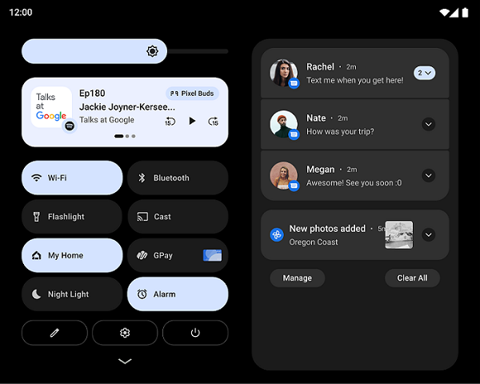

Bienvenidos a TopApps Review aquí podras conocer las mejores apps que no pueden faltar en tu dispositivo android ya sea movil, tablet o tv ademas tendras acceso a la ultimo en novedades e informacion del mundo Android
Se presento Android 12L
Android 12L es la versión de Android para tablets. El sistema operativo fue presentado oficialmente y estará disponible en equipos de algunos fabricantes, con el objetivo de optimizar el funcionamiento y aprovechar mejor las pantallas en las tabletas.

El juego Imposible
Uno de los juegos más míticos de la historia de Android vuelve a Google Play. No se trata de un juego cualquiera, sino de uno de los más complicados, no todos los usuarios son capaces de superarlo. Hablamos de la secuela de El Juego Imposible, que llega a la tienda de aplicaciones doce años después.